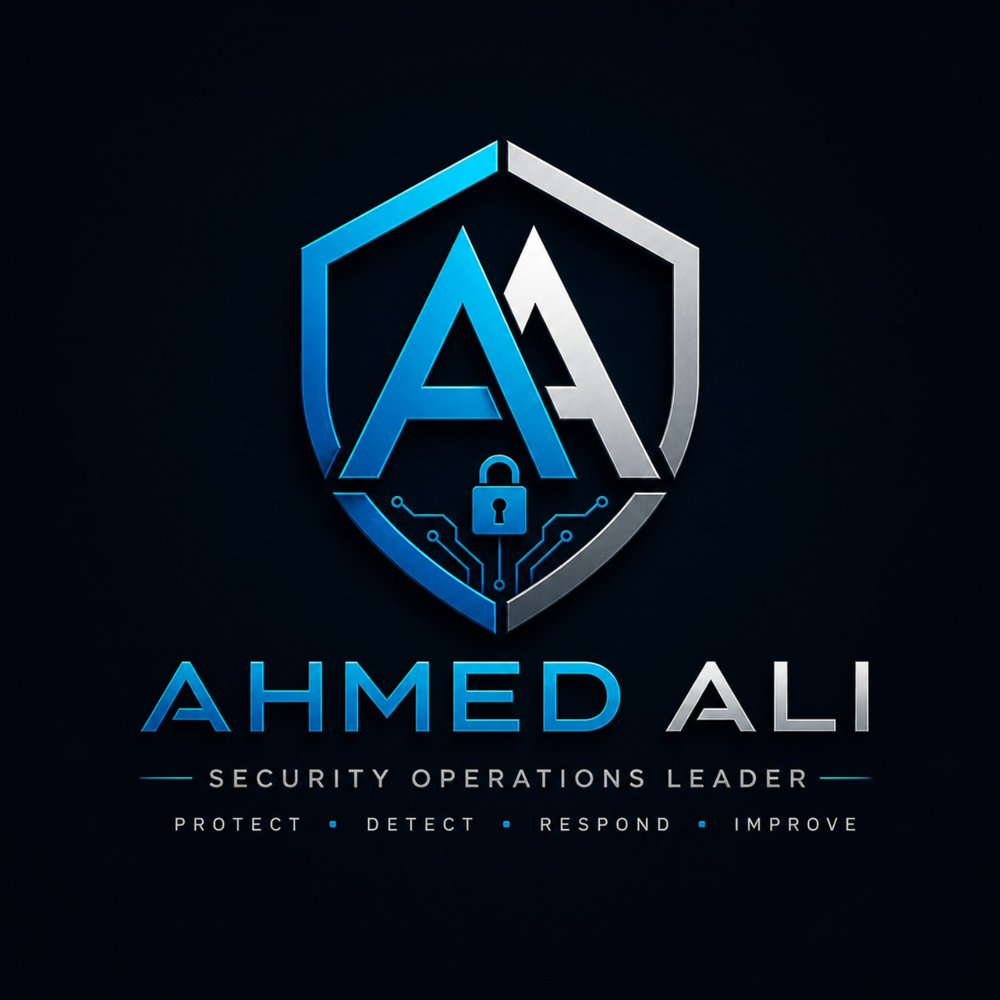

Network Engineer
Albargasy Group

AHMED ALIOPERATIONAL LEADERSHIP • CYBER SECURITY • NETWORKING
Security Operations Leader • Network Security Engineer
Building secure operations, leading multidisciplinary teams, and delivering reliable enterprise services.
$ whoami
Ahmed Ali$ focus
Operations + Security$ availability
24 / 7 Operations01 / ABOUT
Experienced operations and security professional with a background spanning network engineering, security operations, infrastructure modernization and multi-shift operational leadership.
Since 2022, Ahmed has progressed through technical and operational roles at WAVZ, including Security Operations Engineer, Resident Operation Manager, and Operation Center Supervisor. His current scope focuses on project-wide workforce coordination, scheduling, attendance, KPIs, SLAs, incident coordination and operational excellence.
02 / CAREER JOURNEY
Albargasy Group
Albargasy Group
WAVZ
Citizen Card Project • 73 professionals • 6 supervisors
National Post Office Project • responsible for 60 professionals
03 / EXPERIENCE
04 / LEADERSHIP
05 / SKILLS
24/7 Operations · Service Delivery · Workforce Planning · Business Continuity
Security Operations · Incident Response · SIEM · Endpoint Security · Security Monitoring
Fortinet · Cisco · Routing & Switching · VPN · SD-WAN · VLAN
Windows Server · Active Directory · Hyper-V · VMware · DNS · DHCP
Nexthink · BMC TrueSight · ITSM Platforms
Microsoft Azure · AWS Cloud Security (DEPI — In Progress)
06 / CERTIFICATIONS
Azure Security Engineer Associate · 2021
Azure Fundamentals · 2022
FortiGate 7.0 Administrator
SD-WAN 7.0 Architect
Networking & security operations
Networking Basics · Devices & Initial Configuration · Endpoint Security · Ethical Hacker
May 2019
In Progress · 2026
Professional certifications
07 / PROJECTS
Operation Center leadership, workforce coordination, KPI/SLA management, scheduling, attendance and service continuity.
Resident Operation Manager responsible for day-to-day operations and a 73-person workforce, including 6 supervisors.
Enterprise infrastructure upgrade including physical-to-Hyper-V migration, VMware, Kaspersky, new domain, AlienVault and switching upgrades.
Network/security implementation project.
Network/security project included in the professional portfolio.
FEATURED CASE STUDY
Participated in an enterprise infrastructure upgrade covering virtualization, endpoint security, domain services, security monitoring and switching infrastructure.
08 / CONTACT
Available for leadership, operations, network security and cybersecurity opportunities.